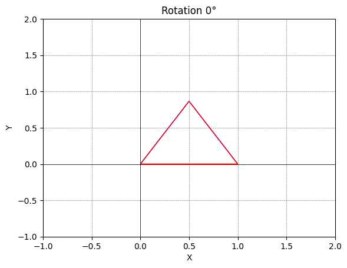
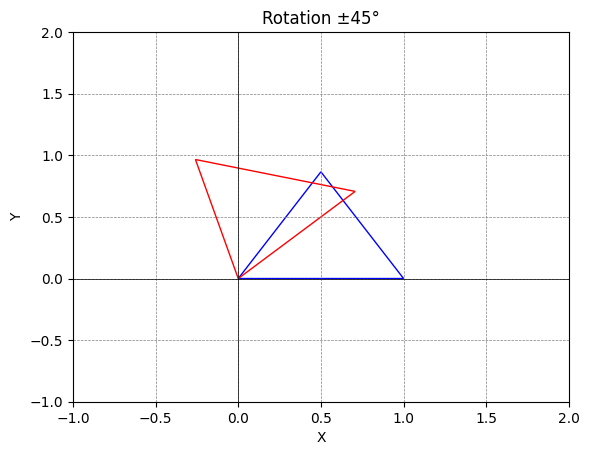
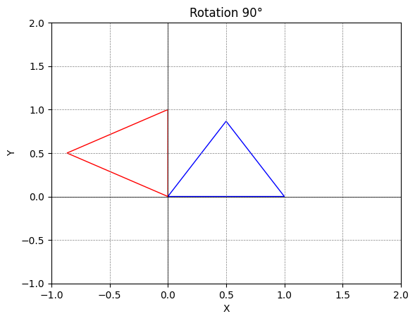
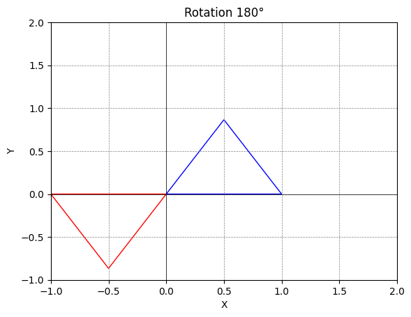
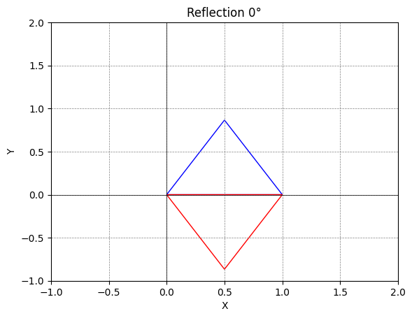
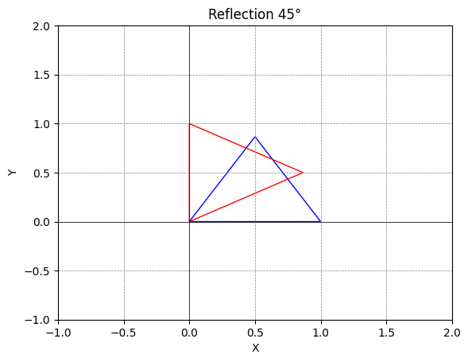
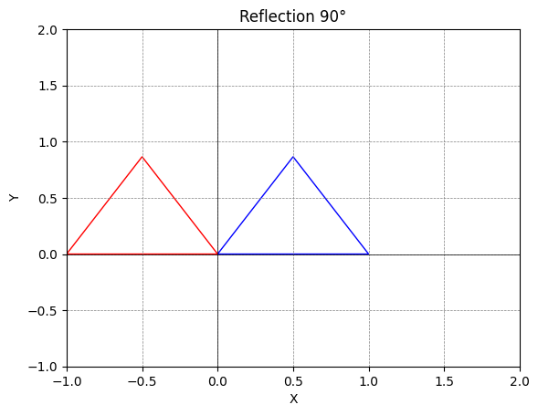
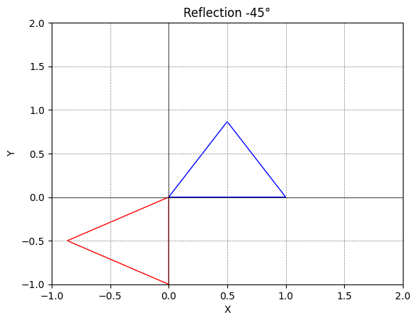
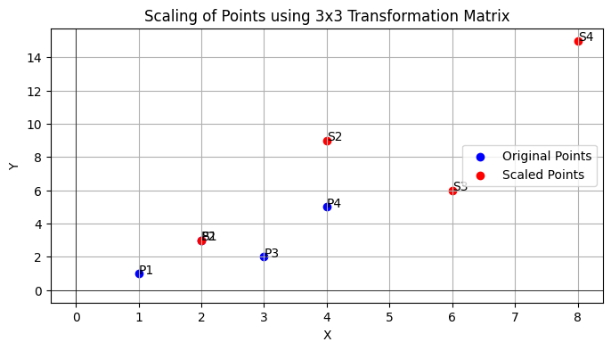
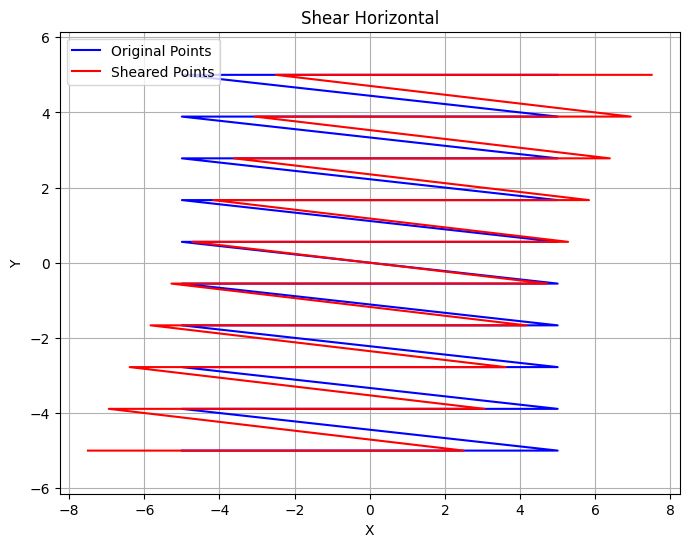

Transformasi Linier.ipynb#
jenis jenis matrix tranformasi#
Transformasi matriks merupakan teknik matematika yang digunakan untuk mengubah bentuk atau posisi objek dalam ruang. ada beberapa jenis transformasi matriks yang umum digunakan dalam berbagai bidang, seperti grafika komputer, visi komputer, dan geometri:
##1. Rotasi (Rotation) Rotasi memutar objek di sekitar titik asal (origin) dengan sudut tertentu. Matriks rotasi untuk rotasi 2D adalah:
Rotasi 0°:
Rotasi θ:
##2. Skala (Scaling) Skala mengubah ukuran objek, memperbesar atau memperkecil objek relatif terhadap titik asal. Matriks skala untuk skala 2D adalah:
di mana 𝑠𝑥 dan 𝑠𝑦 adalah faktor skala di sepanjang sumbu x dan y.
##3. Translasi (Translation) Translasi menggeser objek dari satu lokasi ke lokasi lain. Translasi dalam koordinat homogen (dengan tambahan dimensi) untuk 2D adalah:
di mana 𝑡𝑥 dan 𝑡𝑦 adalah pergeseran di sepanjang sumbu x dan y.
##4. Refleksi (Reflection) Refleksi mencerminkan objek terhadap garis atau bidang tertentu. Matriks refleksi untuk 2D adalah:
Refleksi terhadap sumbu x:
Refleksi terhadap sumbu y:
Refleksi terhadap garis y=x:
##5. Shear (Geseran) Shear menggeser satu bagian dari objek lebih dari bagian lain, menghasilkan efek miring. Matriks shear untuk 2D adalah:
Shear horizontal:
Shear vertikal:
di mana 𝑘 adalah faktor shear.
contoh code refleksi dan rotasi#
import numpy as np
import matplotlib.pyplot as plt
from matplotlib.patches import Polygon
# Function to plot triangle
def plot_triangle(vertices, color='blue'):
triangle = Polygon(vertices, closed=True, fill=None, edgecolor=color)
plt.gca().add_patch(triangle)
# Function to plot transformation
def plot_transformation(matrix, title):
fig, ax = plt.subplots()
# Define vertices of the original triangle
original_triangle = np.array([[0, 0], [1, 0], [0.5, 0.86602540378]]) # Equilateral triangle
# Apply transformation to each vertex
transformed_triangle = np.dot(matrix, np.transpose(original_triangle)).T
# Plot original triangle
plot_triangle(original_triangle, color='blue')
# Plot transformed triangle
plot_triangle(transformed_triangle, color='red')
# Set labels and title
ax.set_xlabel('X')
ax.set_ylabel('Y')
ax.set_title(title)
# Set limits
ax.set_xlim([-1, 2])
ax.set_ylim([-1, 2])
# Show grid
ax.grid(True)
# Show plot
plt.axhline(0, color='black',linewidth=0.5)
plt.axvline(0, color='black',linewidth=0.5)
plt.grid(color = 'gray', linestyle = '--', linewidth = 0.5)
plt.show()
# Matrices from the table
rotation_0 = np.array([[1, 0], [0, 1]])
rotation_45 = np.array([[1/np.sqrt(2), -1/np.sqrt(2)], [1/np.sqrt(2), 1/np.sqrt(2)]])
rotation_90 = np.array([[0, -1], [1, 0]])
rotation_180 = np.array([[-1, 0], [0, -1]])
reflection_0 = np.array([[1, 0], [0, -1]])
reflection_45 = np.array([[0, 1], [1, 0]])
reflection_90 = np.array([[-1, 0], [0, 1]])
reflection_minus_45 = np.array([[0, -1], [-1, 0]])
# List of matrices and titles
matrices = [
(rotation_0, 'Rotation 0°'),
(rotation_45, 'Rotation ±45°'),
(rotation_90, 'Rotation 90°'),
(rotation_180, 'Rotation 180°'),
(reflection_0, 'Reflection 0°'),
(reflection_45, 'Reflection 45°'),
(reflection_90, 'Reflection 90°'),
(reflection_minus_45, 'Reflection -45°')
]
# Plot each transformation
for matrix, title in matrices:
plot_transformation(matrix, title)








##penjelasan code di atas
Kode tersebut melakukan visualisasi transformasi geometris pada sebuah segitiga sama sisi menggunakan berbagai matriks transformasi. Berikut penjelasan fungsionalnya:
Import Library:
numpyuntuk operasi matriks.matplotlib.pyplotuntuk membuat grafik.matplotlib.patches.Polygonuntuk menggambar segitiga.
Fungsi
plot_triangle:Fungsi ini menggambar segitiga dengan titik sudut yang diberikan (
vertices).Segitiga digambar dengan warna yang bisa ditentukan (default: biru).
Fungsi
plot_transformation:Membuat plot baru dengan sumbu X dan Y.
Mendefinisikan titik sudut segitiga asal (segitiga sama sisi).
Menerapkan transformasi ke segitiga menggunakan matriks transformasi yang diberikan.
Menggambar segitiga asal (biru) dan segitiga hasil transformasi (merah).
Menambahkan label sumbu, judul, batas sumbu, dan grid pada plot.
Menampilkan plot.
Definisi Matriks Transformasi:
Matriks untuk berbagai rotasi (0°, 45°, 90°, 180°) dan refleksi (0°, 45°, 90°, -45°) didefinisikan menggunakan numpy.
Loop untuk Visualisasi:
Loop ini iterasi melalui daftar matriks transformasi dan judulnya.
Setiap iterasi memanggil
plot_transformationdengan matriks dan judul yang sesuai.Menampilkan plot transformasi untuk masing-masing matriks.
Secara keseluruhan, kode ini menggambar segitiga asal dan hasil transformasinya untuk berbagai rotasi dan refleksi, sehingga kita bisa melihat bagaimana segitiga berubah bentuk dan orientasi sesuai dengan transformasi yang diterapkan.
skala (scaling)#
Rumus manual untuk melakukan scaling pada sebuah titik
Dalam bentuk matriks, kita bisa menuliskan operasi ini sebagai berikut:
Di mana (𝑥, 𝑦) adalah koordinat titik sebelum scaling, dan matriks skala adalah matriks diagonal dengan 𝑠𝑥 dan 𝑠𝑦 sebagai elemen diagonal.
import numpy as np
import matplotlib.pyplot as plt
# Definisi fungsi untuk melakukan scaling menggunakan matriks transformasi affine
def scale(points, scale_factors):
# Matriks transformasi affine untuk scaling
transformation_matrix = np.array([
[scale_factors[0], 0, 0],
[0, scale_factors[1], 0],
[0, 0, 1]
])
# Tambahkan kolom ones untuk koordinat homogen
homogenous_coordinates = np.hstack([points, np.ones((points.shape[0], 1))])
# Melakukan perkalian matriks untuk menerapkan transformasi
scaled_points_homogeneous = np.dot(homogenous_coordinates, transformation_matrix.T)
# Kembalikan hasil setelah mengubah koordinat homogen kembali ke format biasa
scaled_points = scaled_points_homogeneous[:, :-1]
return scaled_points
# Definisikan titik-titik awal
points = np.array([
[1, 1],
[2, 3],
[3, 2],
[4, 5]
])
# Faktor skala untuk masing-masing sumbu
scale_factors = [2, 3] # Faktor skala untuk sumbu X dan Y
# Terapkan scaling pada setiap titik menggunakan matriks transformasi affine
scaled_points = scale(points, scale_factors)
# Visualisasikan titik-titik sebelum dan sesudah scaling
plt.figure(figsize=(8, 4))
# Plot titik-titik awal
plt.scatter(points[:, 0], points[:, 1], color='b', label='Original Points')
for i, point in enumerate(points):
plt.text(point[0], point[1], f'P{i+1}')
# Plot titik-titik setelah scaling
plt.scatter(scaled_points[:, 0], scaled_points[:, 1], color='r', label='Scaled Points')
for i, point in enumerate(scaled_points):
plt.text(point[0], point[1], f'S{i+1}')
# Penambahan label dan judul
plt.xlabel('X')
plt.ylabel('Y')
plt.title('Scaling of Points using 3x3 Transformation Matrix')
plt.axhline(0, color='black', linewidth=0.5)
plt.axvline(0, color='black', linewidth=0.5)
plt.grid(True)
plt.legend()
plt.show()

Shear (Geseran)#
import numpy as np
import matplotlib.pyplot as plt
# Fungsi untuk membuat matriks shear horizontal
def shear_horizontal(k, points):
shear_matrix = np.array([
[1, k],
[0, 1]
])
return np.dot(shear_matrix, points)
# Buat grid titik-titik
x = np.linspace(-5, 5, 10)
y = np.linspace(-5, 5, 10)
X, Y = np.meshgrid(x, y)
points = np.vstack([X.ravel(), Y.ravel()])
# Shear horizontal
k_horizontal = 0.5
sheared_points_horizontal = shear_horizontal(k_horizontal, points)
# Plot
plt.figure(figsize=(8, 6))
plt.title('Shear Horizontal')
plt.plot(points[0], points[1], color='blue', linestyle='-', label='Original Points')
plt.plot(sheared_points_horizontal[0], sheared_points_horizontal[1], color='red', linestyle='-', label='Sheared Points')
plt.legend()
plt.xlabel('X')
plt.ylabel('Y')
plt.grid(True)
plt.axis('equal')
plt.show()

###penjelasan code di atas
Mengimpor modul yang diperlukan, yaitu NumPy untuk manipulasi data numerik dan Matplotlib untuk plotting.
Mendefinisikan fungsi
shear_horizontal(k, points)yang menerima parameterk(faktor shear) danpoints(array NumPy 2D yang berisi koordinat titik-titik). Fungsi ini menghasilkan titik-titik yang sudah di-shear dengan menggunakan matriks shear horizontal.Membuat grid titik-titik dengan
np.linspaceuntuk mendefinisikan rentang nilai x dan y, dannp.meshgriduntuk membuat grid dari x dan y.Menggabungkan koordinat titik-titik X dan Y dalam satu array dengan
np.vstack.Menentukan faktor shear horizontal (
k_horizontal) yang ingin digunakan.Mengaplikasikan operasi shear horizontal pada setiap titik di grid dengan memanggil fungsi
shear_horizontal.Membuat plot menggunakan Matplotlib:
Plot titik-titik asli dengan warna biru dan garis solid.
Plot titik-titik yang telah di-shear dengan warna merah dan garis solid.
Menambahkan judul plot, label sumbu x dan y, legenda, serta grid.
Memastikan skala sumbu x dan y sama dengan
plt.axis('equal').
Menampilkan plot dengan
plt.show().